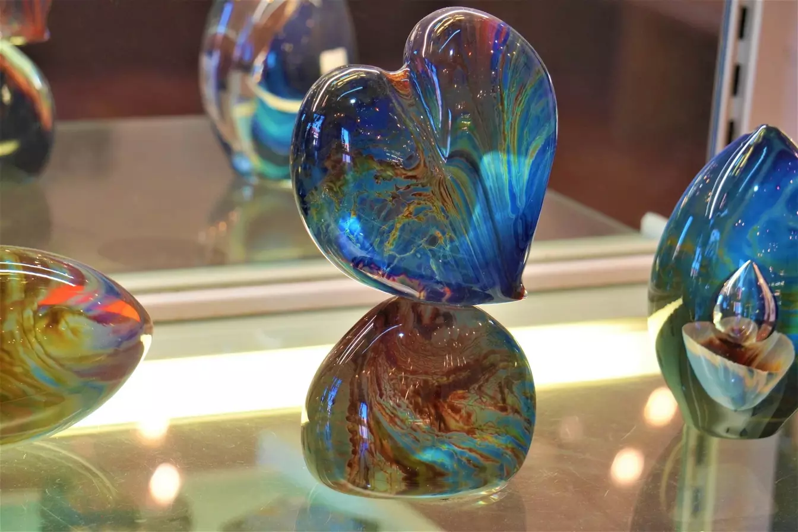

Recent Projects
This is a project of one of our long-time students. Samanth R. has been a glass artist for a few years now. She started out making marbles and now is working on a series of more free form glass art. This piece is a heart made from borosilicate glass. It is made of transparent glass and stands on a dome shaped mound of transparent glass.
This is a complex piece made from several tiny disc beads with a larger focal disc bead. This piece is made by a student new to our studio, Susan W. Susan has been a glass artist for over 30 years and specializes in jewelry. This piece is made from soft glass.